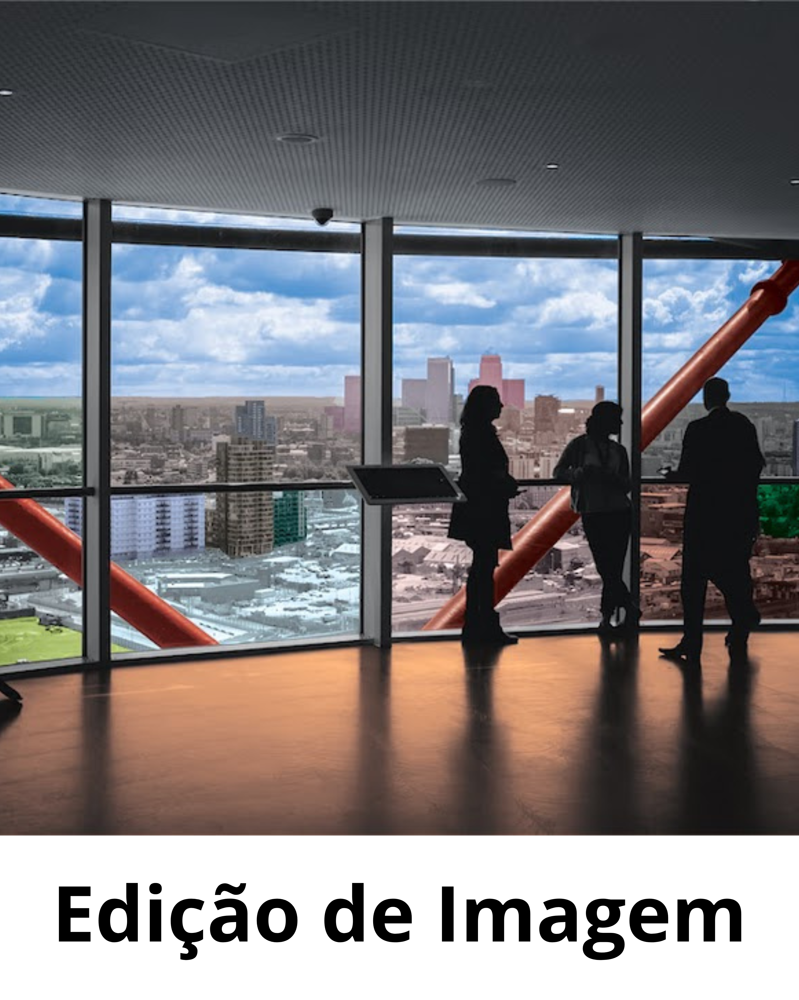
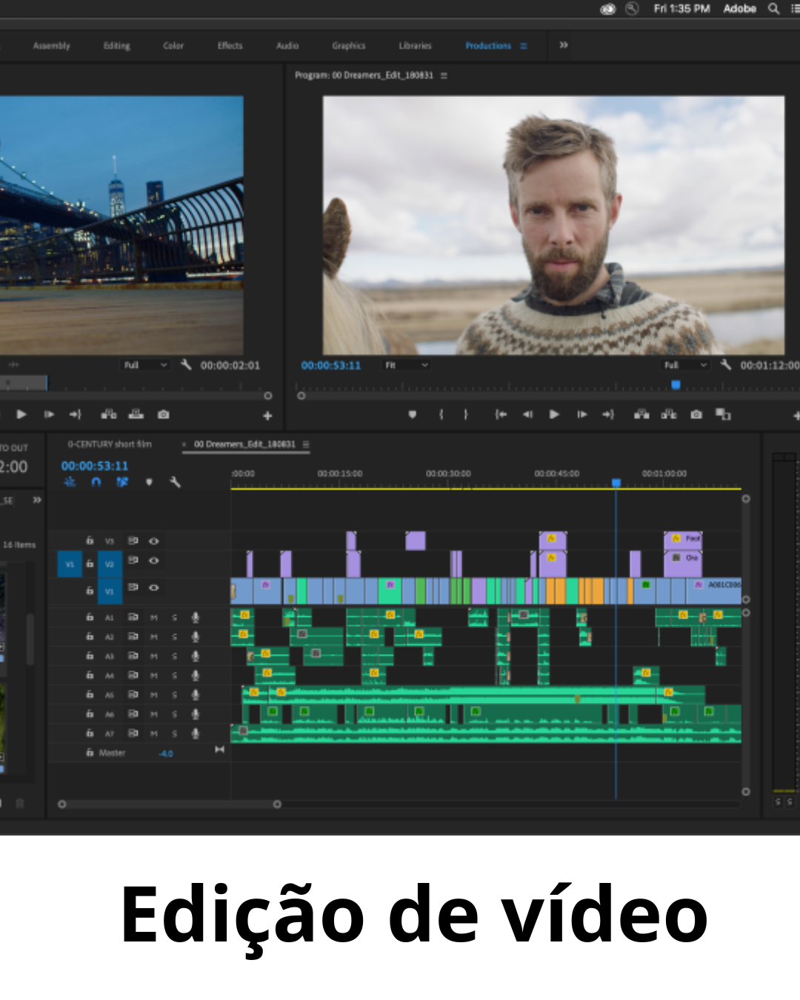

Curso Técnico de Multimédia
Explora o roteiro interativo do nosso curso, conhece todas as disciplinas e descobre os projetos práticos desenvolvidos pelos alunos ao longo dos 3 anos.
Navegar por Anos
1º Ano
Fundamentos & Iniciação
Os fundamentos da criação visual digital, da animação e das tecnologias que permitem a partilha de conteúdos multimédia.
2º Ano
Desenvolvimento & Narrativa
Desenvolvimento de competências em modelação 3D, programação para a web e animações interativas.
3º Ano
Áudio & Vídeo
Aperfeiçoamento das técnicas de edição, tratamento e pós-produção de áudio e vídeo para projetos multimédia.
Anos letivos
Galeria de Projetos
Exemplos de trabalhos realizados nas disciplinas técnicas.

1º Ano
Edição Bitmap
Ediçao de uma imagem sem cores.

2º Ano
Edição 3d
Criação de uma casa famosa no blender em 3D

2º Ano
Edição de Som
Tratamento de som na aplição do Audacity

3º Ano
Pós-Produção de Vídeo
Tratamento de vídeos com o programa premiere da adobe